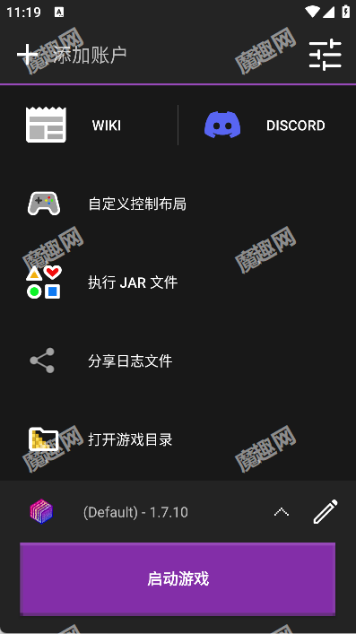
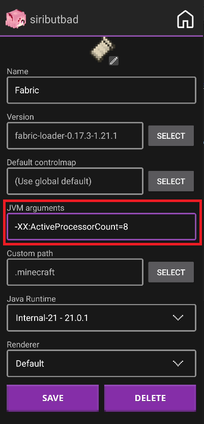

手机玩 Java 版 Minecraft？Amethyst 启动器完全指南
Amethyst 把 PC 上的 Minecraft Java 版搬到了安卓手机上，这篇从零开始带你五分钟跑起来，内存怎么配、闪退怎么查、模组怎么装，新手友好。
这篇文章能带你从零到一，在安卓手机上跑通 Minecraft Java 版——不需要懂什么渲染器、不需要懂 Java 版本，跟着走就行。
它到底是干嘛的？
先打个比方：你手机上装的 Minecraft 其实是专门为手机做的"基岩版"，而 PC 上跑的是"Java 版"。Java 版有基岩版没有的海量模组、光影、整合包，生态完全不一样。Amethyst 就是一个"翻译官"——它让手机能听懂 Java 版的语言，把 PC 上那堆东西搬到手机屏幕上来。
你可以把它理解成一个手机上的 Minecraft 启动器（启动器就是帮你管理游戏版本、模组、配置的工具）。之前社区里最火的 PojavLauncher 就是它的前身，现在换了名字、升级了内核，稳定性和性能都好了不少。
它的官网界面长这样：

左上角能切换游戏版本，中间是启动按钮，右下角有性能和控制的快捷设置入口。整个界面就是为了新手也能一眼看懂而设计的。
五分钟上手：从零到第一次进游戏
好，假设你现在手机上什么都没装，跟着这五步走，包你五分钟内进到主菜单。
第一步：拿安装包
先去官方下载渠道把 Amethyst 的安装包下到手机上。如果之前听过 PojavLauncher 的话，这个新版本的界面和它有点像，但配置逻辑完全重做过。
第二步：首次启动，选版本
第一次打开 Amethyst，它会让你下载游戏版本。直接挑带"release"标签的最新稳定版就行，不用管那些 snapshot（快照版）——快照版是官方测试用的，bug 多，新手别碰。选好后点下载，等它跑完就行。
第三步：内存参数，别用默认
下载完别急着启动。进设置里找到"内存分配"这一项，这里有个新手最容易踩的坑——默认值经常设得太保守，导致游戏要么跑不起来要么帧率低。你需要做的是：看你手机总内存是多少（比如 8GB、12GB），然后分配给游戏总内存的 70% 左右，再减个 200MB 留个缓冲。比如 8GB 的机子，给游戏分 4GB 到 5GB 之间就刚刚好。

看到那个滑块了吗？往右拉就是分给游戏更多内存。记住一个简单的口诀：比你设备最大可用量少 100 到 250MB，留这个余量系统才不会把游戏杀进程。
第四步：创建你的第一个配置档案
Amethyst 用"配置档案"（profile）来管理不同的游戏环境——比如你想玩纯净版、玩装了模组的整合包、玩不同版本，各建一个档案互不干扰。点主界面的"新建配置"，名字随便取，版本选刚才下载的那个，其他保持默认就行。
第五步：启动！
点那个绿色的启动按钮，第一次启动会慢一点（还要下载一些依赖库），等个一两分钟，Minecraft 的标题画面出来就成功了！
上手后先玩这三个功能
能进游戏了？好，但别着急到处瞎逛。先把下面这三个功能摸透，它们会帮你解决 80% 的后续问题。
1. 内存调优：帧率翻倍的捷径
你会发现，同样的游戏、同样的模组，改一改内存分配，帧率能差出一倍来。低配机（6GB 内存以下）尤其要注意：别贪多，给 2GB 到 3GB 就够了，分多了系统反而会因为内存紧张杀进程。帧率太低的时候，先试着把内存往上调一档，比任何光影升级的性价比都高。
2. 日志分享：崩溃时的救命稻草
玩着玩着闪退了？加载世界时卡加载界面？这时候别慌，主菜单里有个"分享日志文件"按钮——点它，系统会把刚才那次运行的完整日志（latestlog.txt）通过分享面板发出去。把这个日志丢给会看的人（或者去Amethyst文档里对照错误关键词），比你说一百句"我的游戏崩了"有用多了。
3. 模组安装：把 .jar 丢进文件夹就行
Amethyst 的模组安装逻辑和 PC 上一样简单：打开手机的文件管理器，找到 Amethyst 的游戏目录（路径大致是 /games/PojavLauncher/.minecraft/），里面有个 mods 文件夹，把你下载好的模组 .jar 文件丢进去就行。下次启动游戏，模组会自动加载，主菜单里也能看到一个"模组"按钮来管理。
小白最常问的三个问题
Q1：为什么我的游戏总是闪退？
闪退（随机崩溃）的排查有个固定顺序，别一上来就重装游戏。第一嫌疑是内存：你分配的内存是不是贴着设备上限跑？如果日志里出现 OutOfMemoryError，说明内存根本不够用，反而要往上加。第二嫌疑是模组：最近装了新模组才开始崩的话，先把那个模组移出来试试。第三嫌疑是渲染器：新版本游戏配了老渲染器，经常会崩，换一个就行。
Q2：手机上能装光影吗？
能，但要看渲染器和你的 GPU。手机上的光影分两条路线：现代路线（Iris/OptiFine 系）需要走 Zink 系渲染器才跑得动，但帧数会明显下降；老版本路线（Open4ES 转换的光影）适合老版本游戏和特定 GPU（Adreno 和 PowerVR，Mali 不行）。低配设备建议先跳过光影，先保证帧数稳定再说——分辨率缩放的性价比比光影高多了。
Q3：日志文件找不到怎么办？
两种情况：Android 10 及更新系统的日志在 Android/data/org.angelauramc.amethyst/files/ 目录下；Android 9 及更旧的在 games/PojavLauncher/ 老路径。如果你找不到 Android/data 文件夹，换一个支持应用目录访问的文件管理器（比如 MiXplorer），或者干脆直接用主菜单的分享日志按钮——这是官方推荐的方式，一步到位。
这套启动器从内核重构到界面设计，社区攒了快两年的迭代成果。如果你想跑得更快、装更多模组，官方维护的那份中文文档里有每个功能的深入讲解——版本管理、渲染器选择、故障排查，全覆盖。国内玩 Java 版的人越来越多，三个主要仓库里都能同步拿到完整的配置指南和整合包清单，GitHub 主仓库更新最快，Gitee 和 GitCode 作为国内镜像同步维护，哪个能访问就用哪个。